修学旅行「大自然の中で行う北海道スキーへの旅4日間」
２月１５日(日)〜１８日(水)、２年生の修学旅行「大自然の中で行う北海道スキーへの旅4日間」に生徒186名、引率教員7名で参加しました。
1日目朝、ANA便とJAL便に分かれ羽田経由へ北海道新千歳空港へ。飛行機内から外を見ると雪が広がっていて意欲が高まりました。
「白い恋人パーク」では、工場を見学し限定のお土産を買いました。
「アサヒビール園」ではジンギスカン食べ放題を堪能しました。
2日目、スキー・スノボ実習はサッポロテイネスキー場で行われました。
前日夜からの雪が降り積もる中生徒は雪にまみれながらもがんばって実習しました。
実習に参加できなかった生徒は「エスコンフィールド」見学に行き、輝く新しい球場に感動し、球団の歓迎に心打たれました。
夕方の小樽自主研修では海鮮丼など好きな店で食べ物を堪能しました。
3日目、スキー・スノボ実習では、多くの生徒が技術を向上させ、スマホで白銀の世界の撮影を楽しむ余裕も出ていました。
インストラクターの先生方と別れを惜しみつつスキー場を去りました。
実習に参加できなかった生徒は「羊ケ丘展望台」に行きクラーク博士の前で記念撮影をし、「サッポロファクトリー」で好きな昼食を味わいました。
夕方の札幌自主研修ではグループで、好きな食事を取り札幌市時計台など自由に観光しました。
4日目、札幌場外市場に行った生徒は海産物のお土産を購入したものもいました。
新千歳空港に直行した生徒はのんびりと買い物を済ませることができました。
ANA便とJAL便に分かれて大きな思い出とお土産をもって羽田経由で夜高松に戻りました。
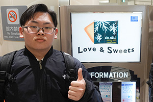
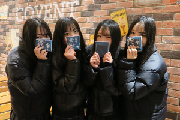
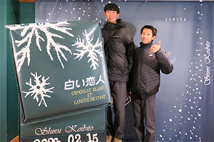
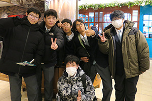
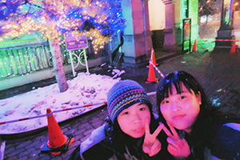
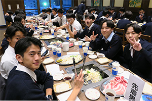
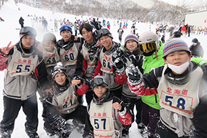
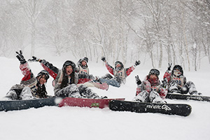
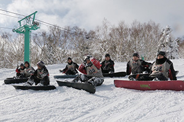
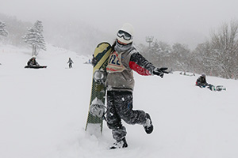
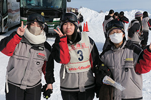
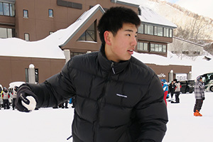
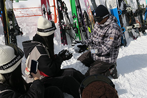
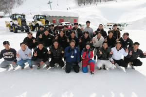
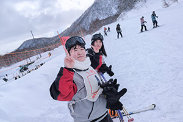
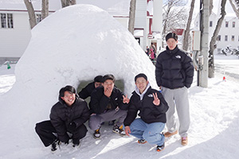
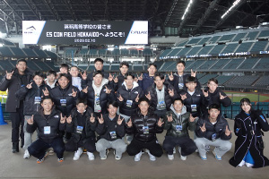
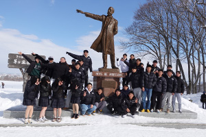
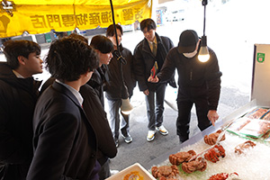
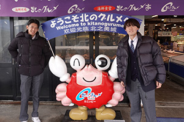
| ＜＜前のニュース | 次のニュース＞＞ |